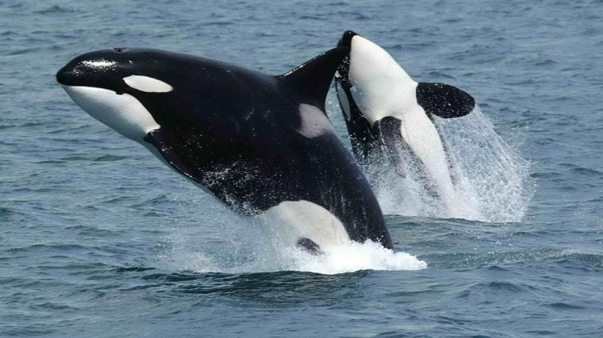
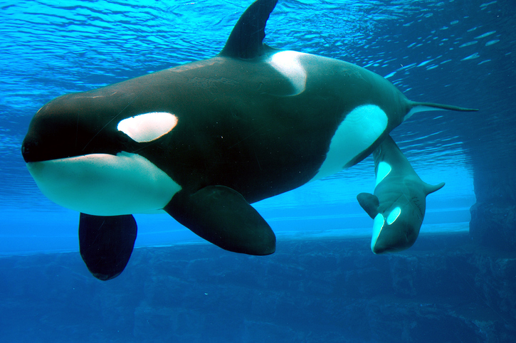
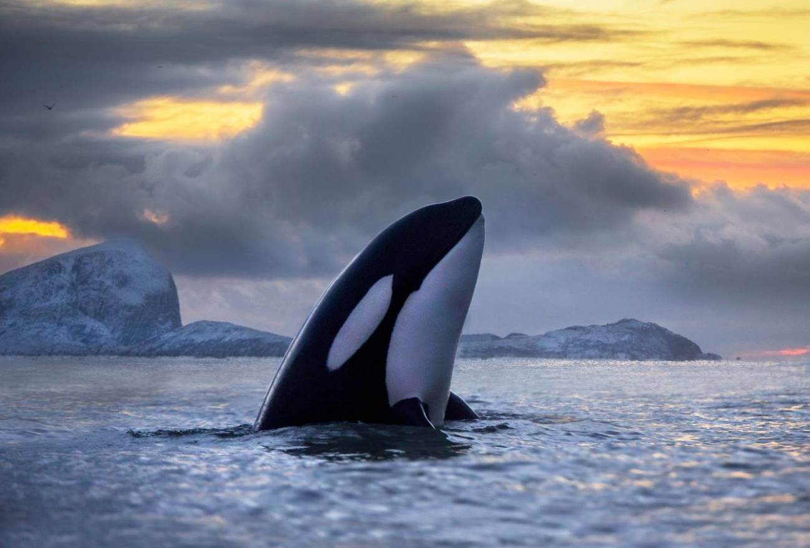

|  |
Orcinus Orca
Una especie de cetáceo odontoceto perteneciente a la familia Delphinidae (delfines oceánicos), que habita en todos los océanos del planeta. Es la especie más grande de delfínido y la única existente actual reconocida dentro del género Orcinus.cetáceo posee una complexión robusta e hidrodinámica. La especie, como característica distintiva, posee una aleta dorsal muy larga que llega a medir hasta 1,8 m en los machos y presenta una coloración blanca y negra que se distribuye de manera particular, la cual es propia de cada individuo y permite distinguirlo de los demás. La orca tiene un dimorfismo sexual marcado; las hembras son más pequeñas que los machos y tienen la aleta dorsal más corta. Mientras que una hembra suele pesar menos de 4 t y rondar los 7,7 m de largo, un macho adulto puede alcanzar un peso de 5,5 t y medir hasta 9 m de longitud. |
Los individuos de la especie forman estructuras sociales complejas y se organizan en grupos matrilineales (descendencia definida por la línea materna); para facilitar la socialización utilizan un método de comunicación sofisticado. Se han identificado varios tipos de orca en los hemisferios norte y sur, los cuales tienen diferencias genéticas, morfológicas, comportamentales y alimentarias tan notables, que incluso se han propuesto como especies diferentes. La orca posee una combinación de fuerza, velocidad e inteligencia que la convierte en un depredador muy versátil; de hecho, por encontrarse en la cima de la cadena alimentaria y no poseer enemigos naturales se convierte en un superdepredador de los océanos. |
| Su dieta es muy variada y, dependiendo del tipo de orca, se alimenta de peces, calamares y mamíferos marinos. Como superdepredador en la cúspide de la cadena trófica, sin ningún enemigo o depredador natural, la orca es capaz, incluso, de alimentarse de especies tan grandes y tan bien preparadas para el ataque como ellas mismas. Así, no sólo compiten con otros animales en la caza de focas, delfines, grandes calamares o peces, sino que, además, se han constatado casos de orcas atacando a tiburones blancos en aguas del océano Pacífico en el área de California, frente a las costas de San Francisco, donde se han registrado y grabado especímenes de orcas devorando grandes tiburones blancos, sobre todo en la época del año en la que son más frecuentes los avistamientos de estos últimos cerca de la costa. |